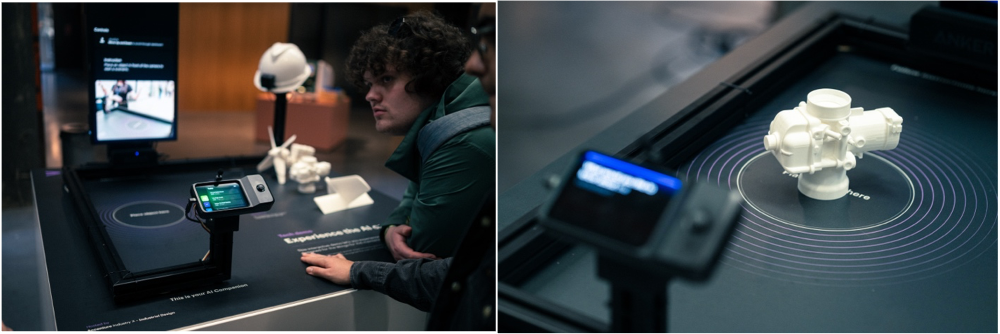
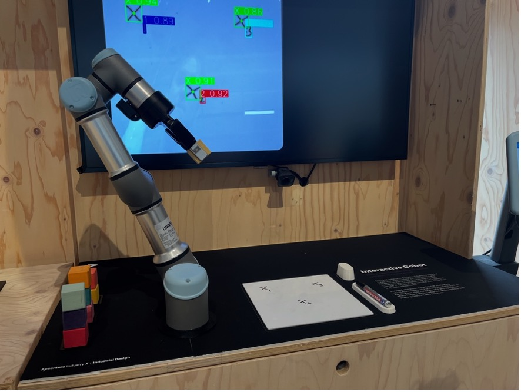
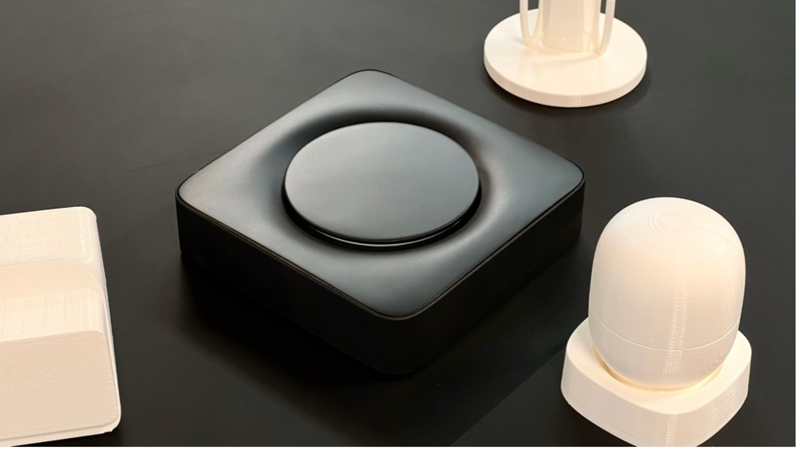

Accenture Industry X Industrial Design Internship
During my internship at Accenture IXID, I worked on several challenging projects as part of the embedded engineering team:
Automated Parcel Documentation System
Developed a sophisticated computer vision system for automated parcel documentation in an industrial setting. Key achievements:
- Implemented an advanced image stitching pipeline using OpenCV for capturing complete parcel views
- Created calibration systems for precise camera timing and lens distortion correction
- Built a robust computer vision pipeline for image processing and 3D model generation
Computer Vision for Dutch Design Week
Developed two AI-powered demonstrations:
- Created a computer vision model for identifying 3D-printed airplane parts, showcasing maintenance automation possibilities

- Implemented a computer vision system enabling a collaborative robot (cobot) to interpret hand-drawn instructions and stack objects accordingly

NFC Media Player
Developed a polished showcase product that demonstrates IXID's engineering capabilities:
- Designed and implemented an interactive NFC-based media playback system
- Created a cloud-integrated statistics dashboard for monitoring media player usage across multiple locations
- Developed an intuitive companion app for device setup and status monitoring
- Implemented sophisticated LED feedback systems for enhanced user experience

Industrial Configuration Tool Development
Developed backend and cloud functions for a production-level configuration tool used in shipyard operations:
- Implemented scalable cloud architecture for industrial-grade reliability
- Created robust error-checking systems for critical HMI configurations
- Collaborated closely with domain experts to optimize the tool for expert users
Through these projects, I gained extensive experience in:
- Industrial-grade software development
- Computer vision and AI implementation
- Hardware-software integration
- Working with domain experts in industrial settings